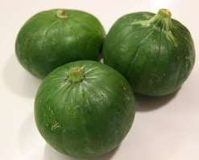

La siembra
Fecha: de fines de setiembre a febrero.
Forma: Se siembra directamente sobre el cantero o sobre el suelo, colocando de 2 a 3 semillas por casilla o huequito.
Distancia: 50 centímetros entre casilla y casilla, y 1 metro entre filas.
Cantidad de semillas (para 10m2): 5 gramos, para obtener unas 15 plantas.
¿Qué tenemos que hacer para cuidar nuestro cultivo?
La cosecha
Producción de semillas.
Se eligen frutos sanos, maduros, de buenas características; se los deja madurar en la planta y se cosechan cuando presentan un color verde oscuro y la pulpa es bien amarilla. Se sacan las semillas, se lavan, se secan y se guardan.